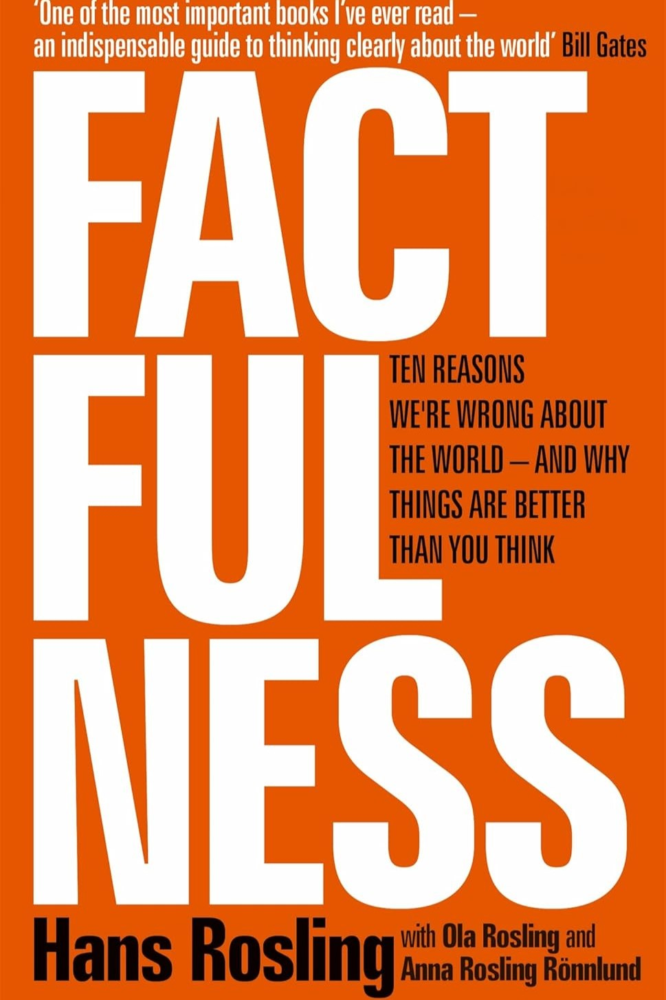
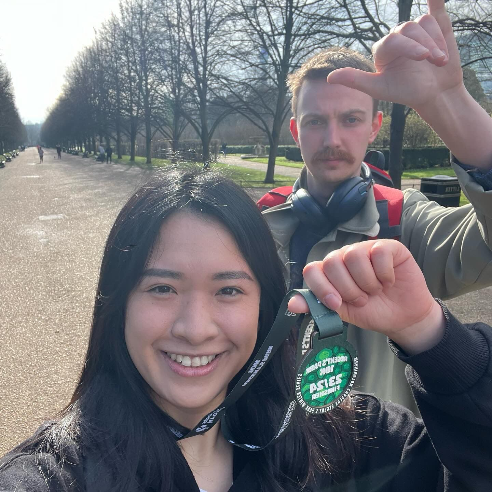
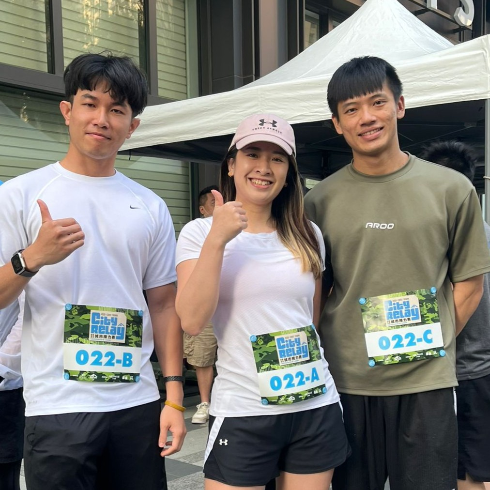
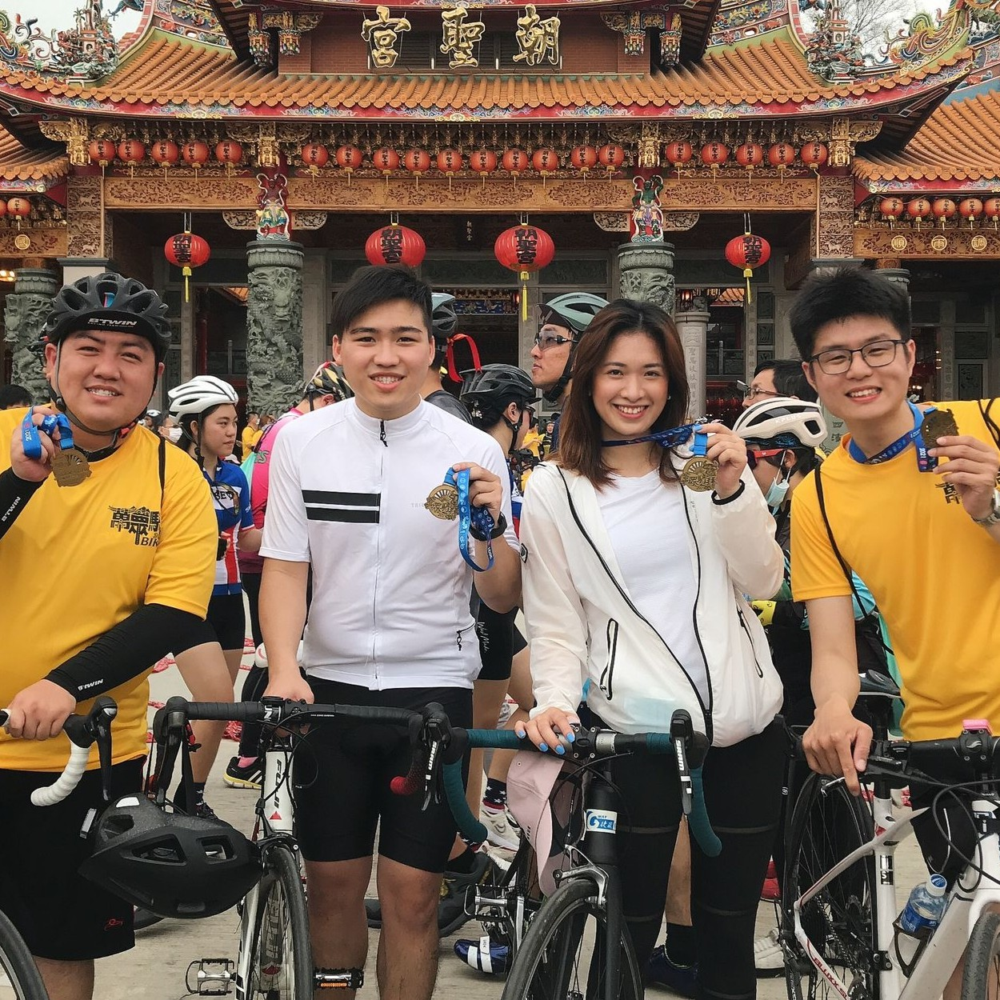
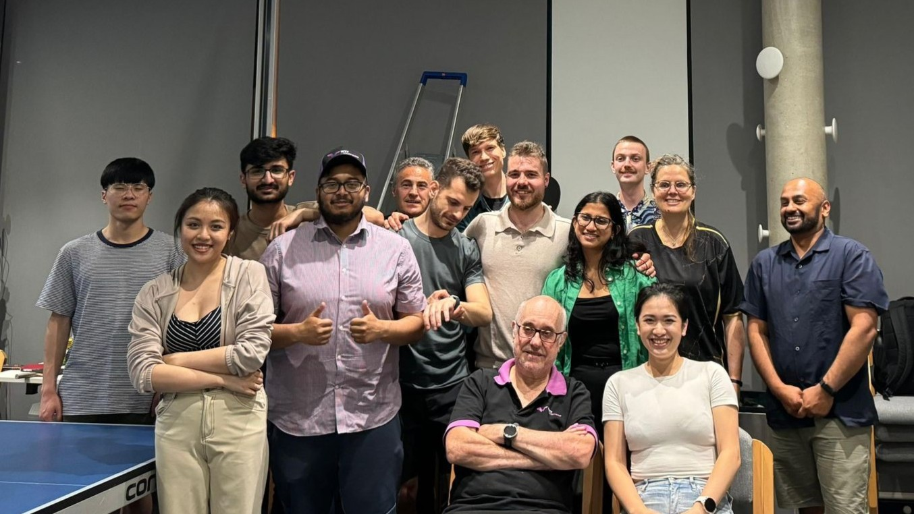
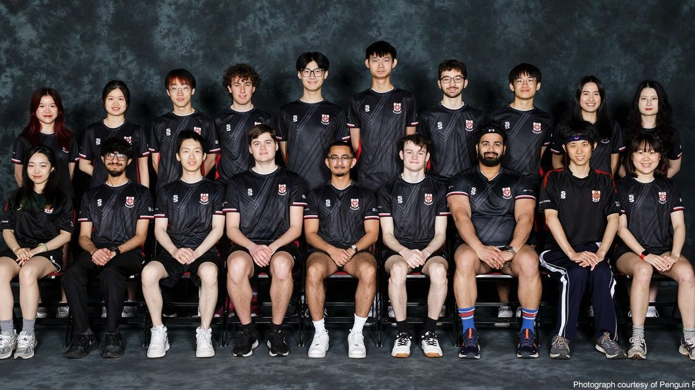

I am a Product Manager focused on designing internal systems that structure how organisations operate.
My work sits at the intersection of product, operations, and data, where the goal is not just to build features,
but to design scalable systems that align multiple teams and workflows.
I am particularly interested in environments where clarity must be created from complexity, especially when
processes are fragmented across teams, systems, and data sources.
How I approach product work is structured around three principles:
Outside of work, I engage in activities that reinforce how I think about systems and iteration.
I enjoy planning structured routes and navigating constraints, which mirrors how I approach decomposing complex systems into manageable parts.
I read to understand systems, behaviour, and decision-making under uncertainty.

Long-distance running has taught me consistency and iterative progress, similar to shipping products in incremental cycles.



Competitive sports have trained my ability to make fast decisions under pressure and continuously improve through feedback loops.


I enjoy building systems that improve how organisations operate, especially where multiple teams and workflows need to be aligned into a coherent structure.